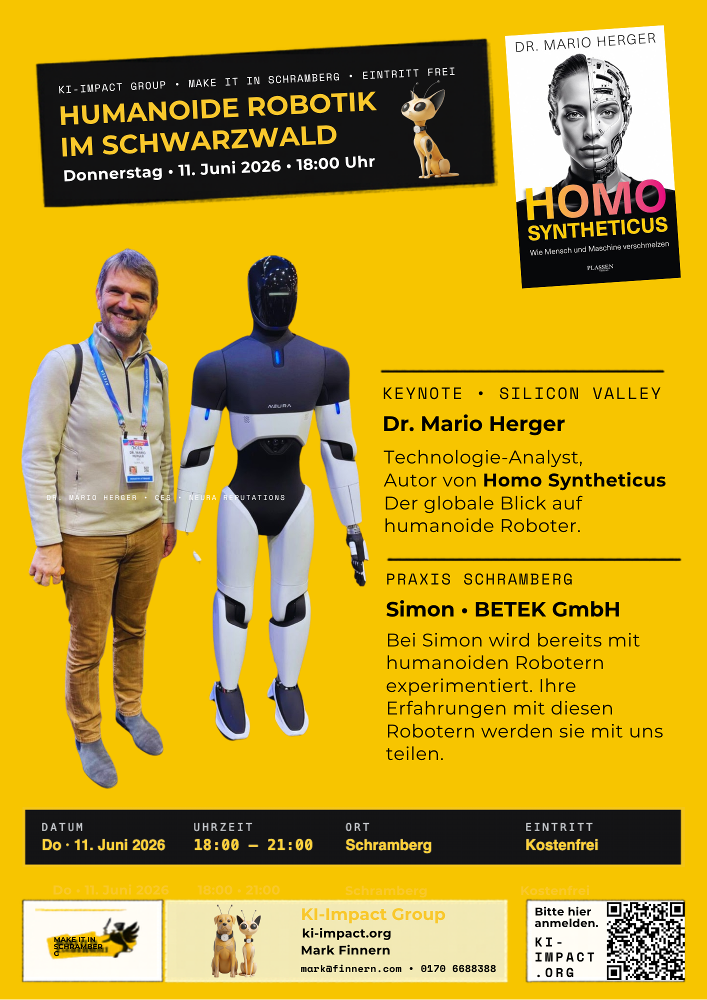
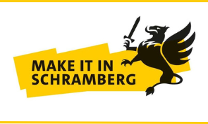

Humanoide Robotik im Schwarzwald

Humanoide Robotik im Schwarzwald
Keynote · Silicon Valley: Dr. Mario Herger, Technologie-Analyst und Autor von Homo Syntheticus. Der globale Blick auf humanoide Roboter.
Praxis · Schramberg: Simon · BETEK GmbH experimentiert bereits mit humanoiden Robotern und teilt die Erfahrungen aus erster Hand.
Was jetzt kommt.
Road to AI Compliance – Workshop
Praxis-Workshop zum EU AI Act und zur Operationalisierung von KI-Compliance im Unternehmen. Welche Pflichten gelten ab wann, wie dokumentiere ich Risikoklassen, was muss in Verträgen und Prozessen verankert werden.
Zur Veranstaltung →
Erfolgreiches Standortmarketing: Digitale Tools zur Fachkräftegewinnung
Kostenfreier Workshop mit Wirtschaftsförderung Schwarzwald-Baar-Heuberg & Firma Maurer. Wie Lage, Infrastruktur und Freizeitangebote professionell in die Karriereseite einfließen – einfach, digital, DSGVO-konform.
Zur Anmeldung →Themenabend: China – Wirtschaft, Politik, Zukunft
Mit Lukas Eggert (Universität Tübingen): aktuelle wirtschaftliche und politische Entwicklungen in China und was sie für Unternehmen, Märkte und internationale Zusammenarbeit bedeuten.
Industrial Technology Summit – KI & Machine Learning
Führende Industrie-Experten diskutieren den Einsatz von KI und Machine Learning in der Produktion.
Details →KI-READY Summit 2026
Der KI-Anwender-Event für Entscheider aus Automation, Automotive, Maschinenbau, Elektronik und Medizintechnik.
Zum Summit →MountainsTour @ E. Wehrle GmbH
Werksbesichtigung & Netzwerken in der Schwarzwälder Industrie. Einblicke in Fertigung, Innovation und gelebte Unternehmenspraxis.
TechnologyMountains Kalender →Humanoide Robotik im Schwarzwald – Mario Herger & Simon/BETEK
Keynote aus dem Silicon Valley trifft Praxis aus dem Schwarzwald: Wo stehen humanoide Roboter heute – und wie experimentiert Simon / BETEK schon damit?
Jetzt anmelden →Business-Speeddating der Wirtschaftsjunioren SBH
Wirtschaftsjunioren Schwarzwald-Baar-Heuberg. Strukturiertes Speeddating für schnelle, gezielte Business-Kontakte in der Region.
Weitere Informationen →Infomarkt der Möglichkeiten: Forschung trifft Industrie
Forschungseinrichtungen präsentieren Lösungen für Industrie und Mittelstand: Sensorik, KI, Materialien, Produktion. Direkter Austausch mit Forschenden und passenden Förderwegen.
TechnologyMountains Kalender →KI-gestützte Prozessautomation mit n8n – Grundlagen für KMU
Erster IHK-zertifizierter n8n-Kurs der Region. Mark Finnern als Dozent. Berufsbegleitend, praxisnah, Low-Code. Fördermöglichkeit vorhanden.
Zum Kurs →Künstliche Intelligenz in der Medizintechnik – wie geht das regulatorisch konform?
MDR, IVDR und EU AI Act zusammengedacht: Anforderungen an KI-Komponenten in Medizinprodukten, Risikoklassen, technische Dokumentation und Marktzugang.
TechnologyMountains Kalender →Zukunftsforum Bau & Industrie 2026
C-Level aus Bau, Industrie und Engineering. Innovation auf Deutschlands höchster Besucherplattform.
Details →Azubi-Speed-Dating Schramberg
Städtische Wirtschaftsförderung, Handels- und Gewerbeverein und Agentur DialogManufaktur. Format, um Jugendliche gezielt auf den eigenen Betrieb aufmerksam zu machen. Anmeldeschluss für Unternehmen: 12. Mai 2026.
Als Unternehmen anmelden →Käpsele Innovation Festival
Das Innovations-Highlight im Südwesten. Mit StartupBW Elevator Pitch Landesfinale.
Zum Festival →KI Festival Heilbronn 2026
Europas KI-Treffpunkt. Live-Demos, Workshops, Keynotes. Kostenlos. 2025: 13.500 Besucher.
KI Festival →„Was KI wirklich ist" – Technischer Einstieg & Begriffsverständnis
Klarheit statt Buzzwords: Was KI technisch leisten kann, wie Modelle trainiert werden und wo die Grenzen liegen. Fundament für alle, die KI-Projekte fundiert bewerten wollen.
TechnologyMountains Kalender →Infomarkt der Möglichkeiten: Digitale RA- & QM-Lösungen
Regulatory Affairs & Qualitätsmanagement digital aufgestellt: Tools, Prozesse und Anbieter für die Medizintechnik-Branche.
TechnologyMountains Kalender →AI Compliance Officer in der Medizintechnik
Mehrteiliger TechnologyMountains-Lehrgang: EU AI Act × MDR/IVDR praktisch umsetzen. Rolle, Pflichten und Werkzeuge des AI Compliance Officers in Medizintechnik-Unternehmen.
Zum Lehrgang →KI-Kompass 2026.
KI-Kompass: Orientierung für KMU in der Region
Gemeinsame Initiative der IHK Schwarzwald-Baar-Heuberg und TechnologyMountains e.V. – ein Jahresprogramm aus Workshops, Online-Seminaren, Werksbesuchen und Zertifikatslehrgängen rund um Künstliche Intelligenz, Compliance und Digitalisierung. Eine kuratierte Sammlung, die mehrere der oben gelisteten Termine bündelt und laufend ergänzt wird.
Noch in Planung.
InnovationForum Smarte Technologien & Systeme
TechnologyMountains e.V. & IHK Schwarzwald-Baar-Heuberg. ~200 Teilnehmer, KI, IoT, Sensorik, AR/VR.
TechnologyMountains →Fraunhofer IAO: KI-Veranstaltungen 2026
Generative KI, Agentische KI, KI in der Produktion. KI.Summit 2026 in Planung.
IAO Veranstaltungen →